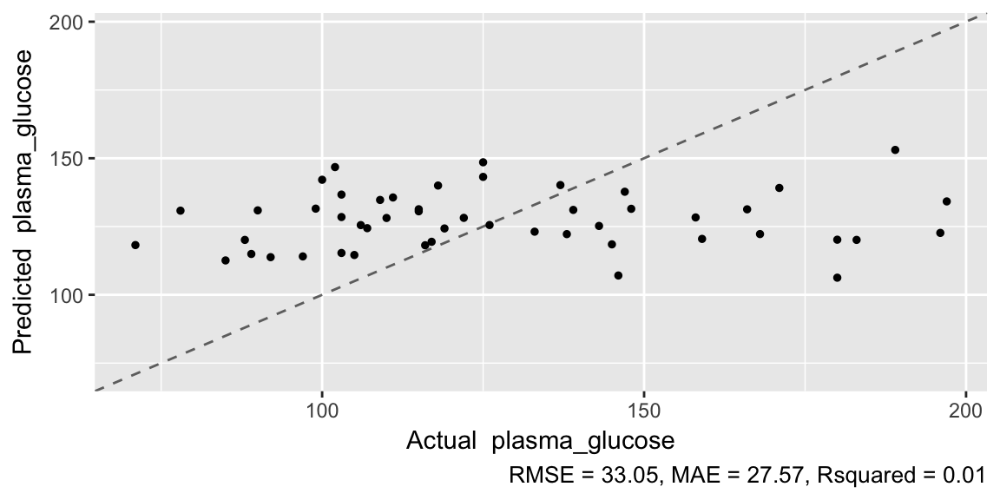
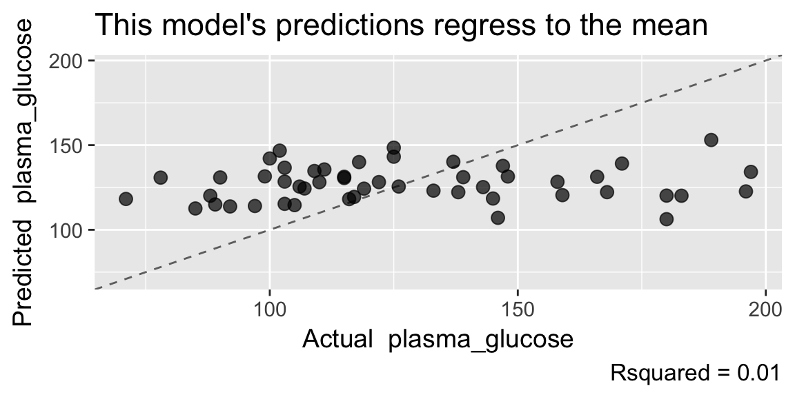
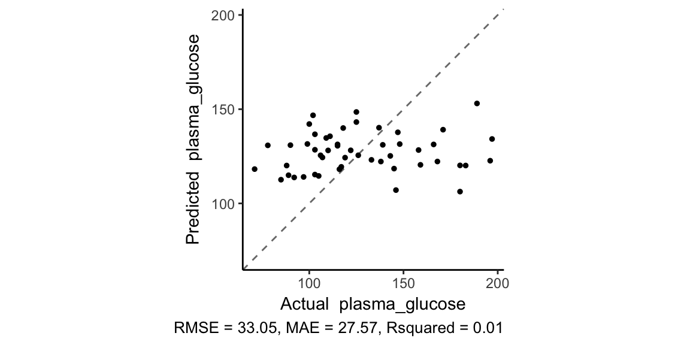

plot.predicted_df.RdPlot model predictions vs observed outcomes
# S3 method for predicted_df plot(x, caption = TRUE, title = NULL, font_size = 11, outcomes = NULL, print = TRUE, ...) plot_regression_predictions(x, point_size = 1, point_alpha = 1, target) plot_classification_predictions(x, fill_colors = c("firebrick", "steelblue"), fill_alpha = 0.7, curve_flex = 1, target)
| x | data frame as returned `predict.model_list` |
|---|---|
| caption | Put model performance in plot caption? TRUE (default) prints all available metrics, FALSE prints nothing. Can also provide metric name (e.g. "RMSE"), in which case the caption will include only that metric. |
| title | Character: Plot title, default NULL produces no title. |
| font_size | Number: Relative size of all font in plot, default = 11 |
| outcomes | Vector of outcomes if not present in x |
Logical, if TRUE (default) the plot is printed on the current graphics device. The plot is always (silently) returned. |
|
| ... | Parameters specific to plot_regression_predictions or plot_classification_predictions; listed below. These must be named. |
| point_size | Number: Point size, relative to 1 |
| point_alpha | Number in [0, 1] giving point opacity |
| target | Not meant to be set by user. outcome column name |
| fill_colors | Length-2 character vector: colors to fill density
curves. Default is c("firebrick", "steelblue"). If named, names must match
|
| fill_alpha | Number in [0, 1] giving opacity of fill colors. |
| curve_flex | Numeric. Kernal adjustment for density curves. Default is 1. Less than 1 makes curves more flexible, analogous to smaller bins in a histogram; greater than 1 makes curves more rigid. |
A ggplot object
Note that a ggplot object is returned, so you can do additional customization of the plot. See the third example.
models <- machine_learn(pima_diabetes[1:50, ], patient_id, outcome = plasma_glucose, models = "rf", tune = FALSE)#>#>#> #>#> #> #>#>#> #> #>predictions <- predict(models) plot(predictions)plot(predictions, caption = "Rsquared", title = "This model's predictions regress to the mean", point_size = 3, point_alpha = .7, font_size = 14)p <- plot(predictions, print = FALSE) p + coord_fixed(ratio = 1) + theme_classic()